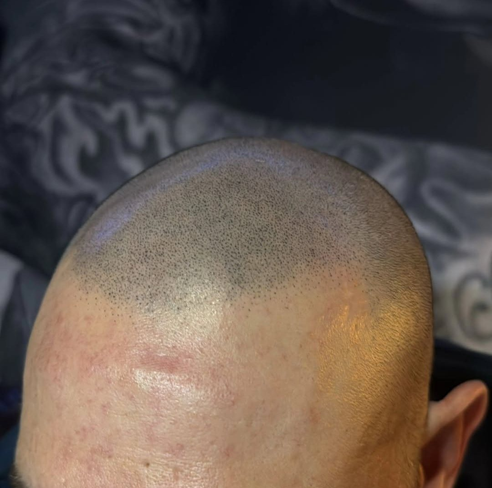
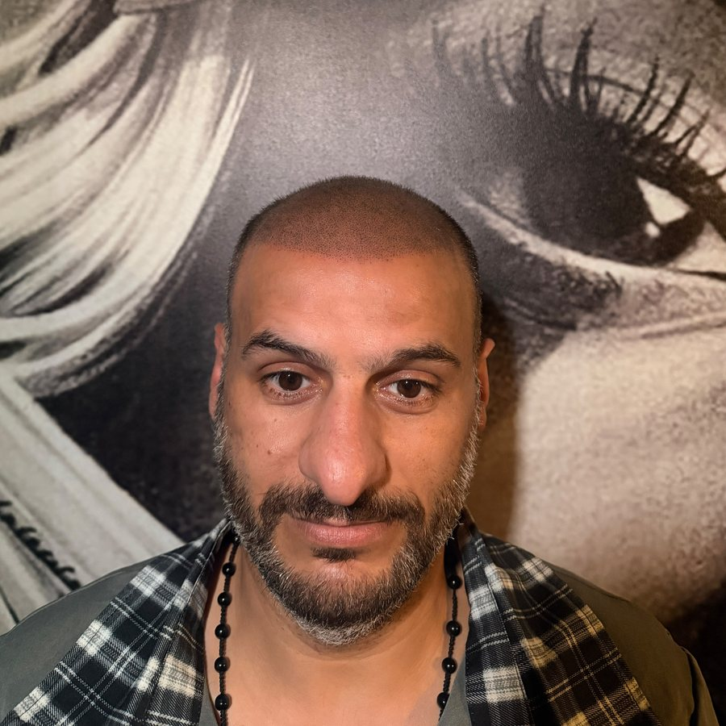
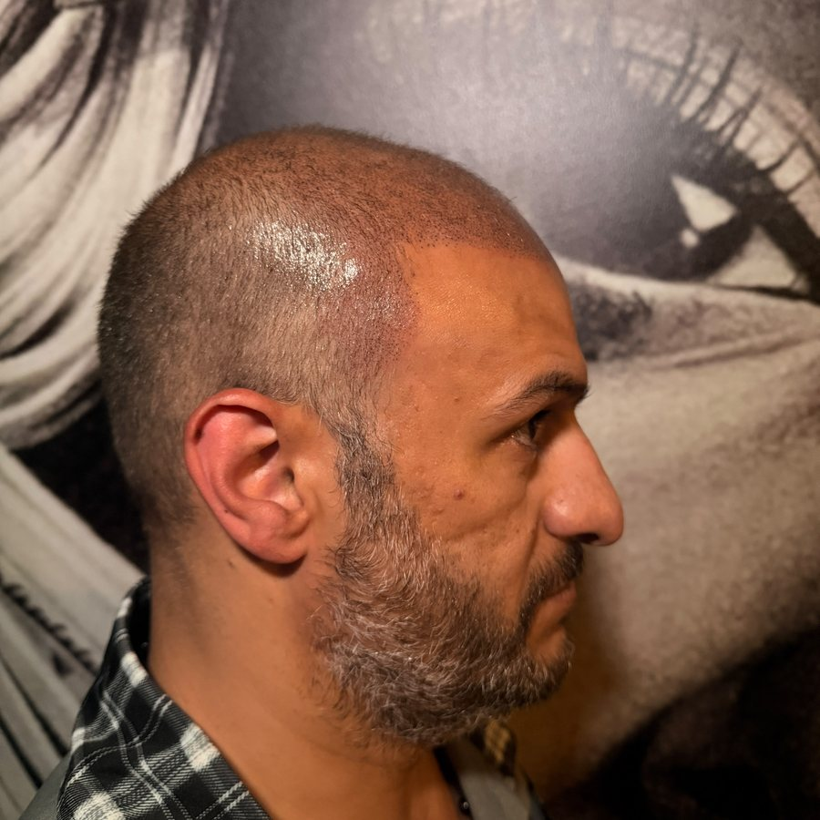
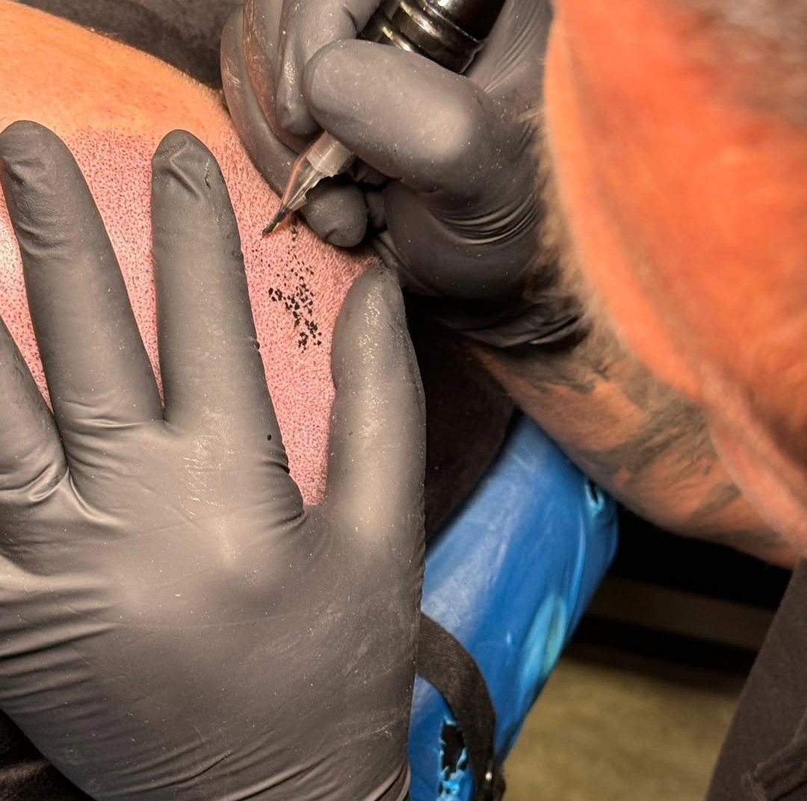
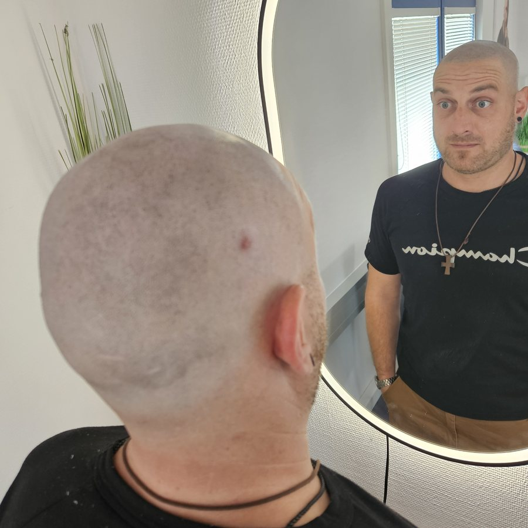
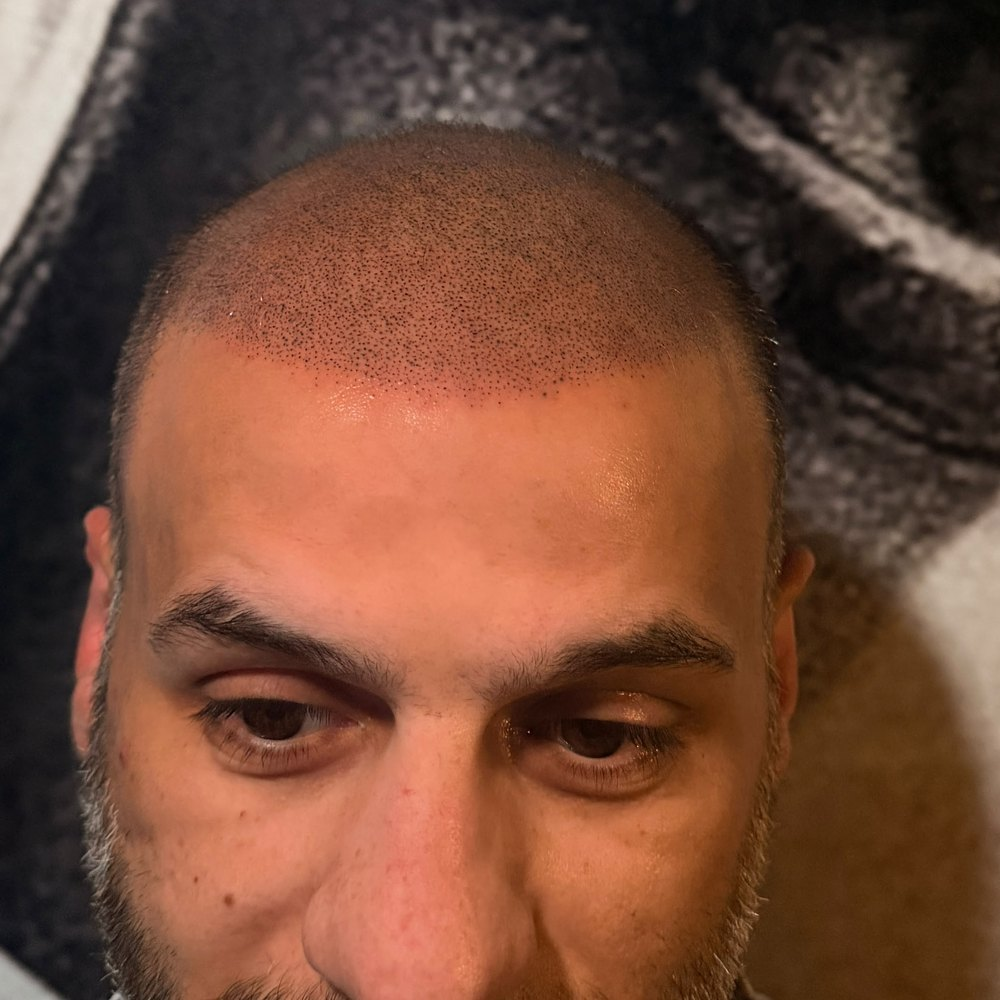
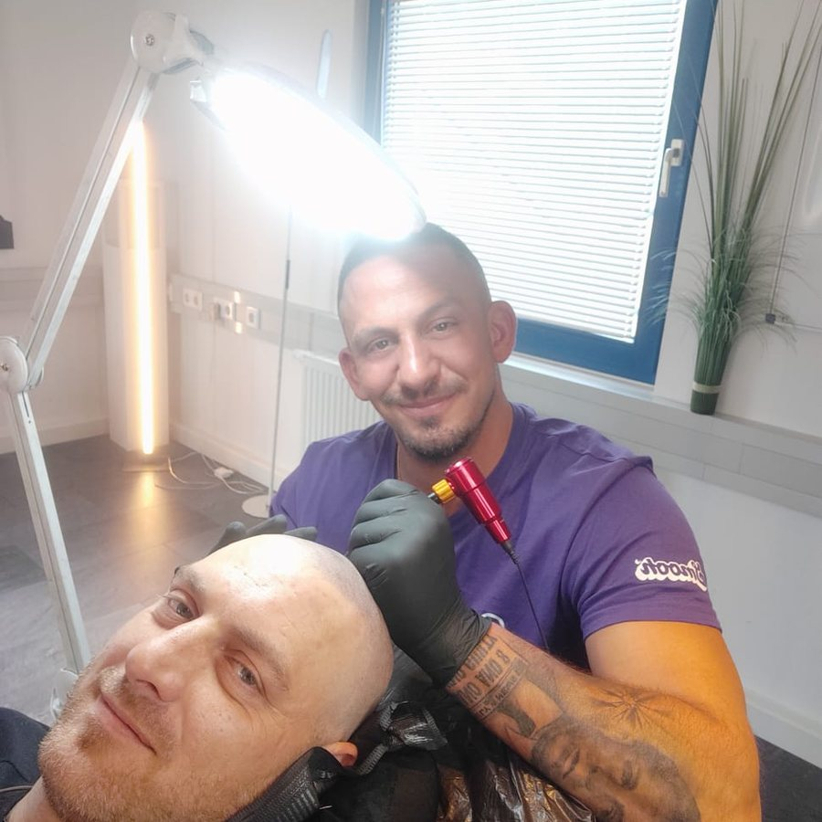

Lichtes Haar
Die Kopfhaut schimmert durch? Pigmente unter dem vorhandenen Haar nehmen den Kontrast und lassen das Haar sofort dichter wirken – auch bei längeren Haaren.
Haarpigmentierung in Lingen & im Emsland
Die Alternative zur Haartransplantation: keine Operation, keine Schmerzen wie nach einer OP, keine monatelange Wartezeit – und deutlich günstiger. Ich pigmentiere feinste Haarpunkte in mehreren Farbtönen, damit Haarlinie und Dichte so aussehen, als wären sie nie weg gewesen. Sofort sichtbar, direkt gesellschaftsfähig.
Ich helfe bei

Für wen?
Die Kopfhaut schimmert durch? Pigmente unter dem vorhandenen Haar nehmen den Kontrast und lassen das Haar sofort dichter wirken – auch bei längeren Haaren.
Eine individuell gezeichnete Haarlinie mit weichen Verläufen – passend zu Gesichtsform und Alter. Ergebnis: der gepflegte Look eines frisch rasierten Kopfes.
Mehr Dichte zwischen den Grafts und an Spenderstellen – die ideale Ergänzung zu einer Transplantation.
OP-, FUT- oder Unfallnarben werden mit passenden Farbtönen so pigmentiert, dass sie im Haarbild verschwinden.
Lichter Scheitel oder dünner werdendes Haar? Die Pigmentierung unter dem Haar sorgt dafür, dass die Kopfhaut weniger durchscheint.
Kahle Stellen oder ein lichter Bart? Feine Pigmentpunkte füllen die Lücken auf, damit der Bart gleichmäßig und dichter wirkt.
Alternative zur Haartransplantation
Eine Haartransplantation ist eine Operation: schmerzhaft, teuer und mit langer Heilungszeit. Und weil das eigene Haar oft weiter ausfällt, braucht es danach häufig trotzdem eine Pigmentierung, um das Ergebnis zu verdichten. Mit einer Haarpigmentierung bekommst du ein volles Haarbild direkt – ohne Skalpell.
Die Methode
Ein echtes Haarbild ist nie einfarbig und nie gleichmäßig – also darf es die Pigmentierung auch nicht sein. Ich arbeite deshalb nach der 4D-Technik:
Ablauf
Wir schauen uns deine Ausgangssituation an, besprechen Wunsch-Look und Haarlinie. Unverbindlich – vor Ort oder per WhatsApp mit Fotos.
Ein kleiner Test zeigt, welche Farbtöne auf deiner Haut perfekt wirken. So gibt es später keine Überraschungen.
Je nach Stelle bis zu 4 Sitzungen à ca. 2–4 Stunden – kleine Stellen gehen deutlich schneller. Zwischen den Terminen liegen einige Tage, damit die Haut abheilen kann.
Du bekommst klare Pflegehinweise und ich bleibe dein Ansprechpartner – auch für spätere Auffrischungen.
Ergebnisse

Vorne
SeiteHaarlinie und Dichte wirken von vorne und von der Seite natürlich.




Über mich
Hi, ich bin Alessandro. Ich weiß, wie sehr Haarausfall am Selbstbewusstsein nagen kann – und wie viel ein natürliches Ergebnis verändert. Gelernt habe ich das Handwerk bei Foundation Time. Jetzt biete ich die Haarpigmentierung direkt hier in Lingen an.
Bei mir gibt es keine Massenabfertigung: Jede Haarlinie wird individuell geplant, jeder Termin hat genug Zeit.
Studio: im 740 Tattoo, Burgstraße 12, 49808 Lingen (Ems)
FAQ
Viele Kunden spüren kaum etwas – manche empfinden es sogar als angenehm, fast wie eine Massage. Je nach Stelle spürt man es etwas mehr oder weniger.
Die Pigmente sitzen sehr oberflächlich und hellen über die Jahre langsam auf. Je nach Hauttyp und Sonneneinwirkung ist nach einigen Jahren (ca. 5) eine kurze Auffrischung sinnvoll.
Nein. Statt Flächen werden feinste Punkte in mehreren Farbtönen und Formen gesetzt, die echte Haarstoppeln nachbilden. Kein Verlaufen und kein Blaustich, weil ich andere Pigmente verwende als beim Tätowieren: vegane, farbechte Pigmente, die der Körper über die Jahre langsam abbaut. Deshalb behalten sie ihren echten Farbton.
Ein paar Tage kein Sport mit starkem Schwitzen, keine Sauna, kein Schwimmen und keine direkte Sonne. In den ersten Tagen solltest du die Kopfhaut eincremen und feucht halten.
Die Kosten hängen vom Aufwand ab, also von der Fläche und dem gewünschten Ergebnis. Kleinere Stellen, zum Beispiel Lücken im Bart, sind entsprechend günstiger. Zur groben Orientierung: Eine kahle Stelle am Hinterkopf (Tonsur) liegt bei etwa 499 €, ein komplett kahler Oberkopf zwischen 1.500 und 2.000 €. Das sind aber nur Richtwerte – der Preis ist fast immer individuell, weil jeder Kopf anders ist. In der kostenlosen Erstberatung bekommst du ein festes Angebot – transparent und ohne versteckte Kosten.
Bei lichtem Haar ja – die Pigmentierung unter längerem Haar reduziert den Kontrast zur Kopfhaut. Bei Glatze sieht das Ergebnis am besten mit rasiertem oder sehr kurzem Haar aus.
Kontakt
Schreib mir am einfachsten per WhatsApp – gern gleich mit ein paar Fotos deines Kopfes (vorne, oben, seitlich). Ich melde mich innerhalb von 24 Stunden.